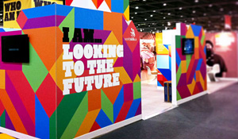
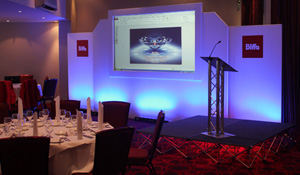
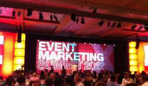

Services we Offer
Creative Knights offers the total package – unique by innovation, we are your only one-stop-shop for total piece of mind and assurance that your event will be a total success. You pick and choose what services and products you need – we do the rest!
- Venue Finding
- Event planning and organization
- Corporate hospitality
- Accommodation booking, corporate rate negotiation
- On site event management
- Sponsorship and exhibition management and sales
- Marketing, Mailing and advertising.
Event Management
Using Creative Knights to run your event means taking the pressure off you. We can deal with all elements of your event including planning, logistics and finances. Thorough planning is essential to any successful event. We listen to you, understand your needs, we prepare a full proposal of ideas; determine costs and then we brief you on logistics so you can get the feel of the whole event. Once you get to know how your event will happen we will give you full production schedule for the event; budgets, revenues, expenditures and predicted cash flows. We will undertake research on competitor activity and event feasibility; searching venues, services and suppliers, giving you a choice of costs and budgets and then finalizing on arrangements. Last but not the least we will update you periodically to ensure that you are well informed about the progress and schedules.
We will then we manage the event effectively by following a precise and detailed production schedule to ensure all deadlines are adhered to. In addition to a detailed budget, the schedule allows us to monitor expenditure and cash flow carefully during the planning period. To ensure your peace of mind we assess our performance. As part of the full event management service an evaluation and feedback report is prepared. This includes evaluation and any statistical data that you might require. Once the event is completed, we need to ask for your feedback as part of our continual improvement stratagy for efficient and effective quality management system which we adhere too.
Conferences
Conferences are high-level events covering contemporary and interesting issues while addressing academia, industry, the public sector, local authorities and non-governmental organizations. Each conference offers the possibility of having presented the latest developments on the subject in question and simultaneously gives the opportunity for the development of network of contacts and the exchange of opinions among the participants. Our professional experience in event planning encompasses every aspect of conference management, which also includes a comprehensive network of relevant contacts ensuring that you are provided with superior quality of services as well as competitive rates at every stage of conference.

Exhibitions
Creative Knights is a dynamic startup having ambitious growth plans in the sphere of INDUSTRIAL and CONSUMER EXHIBITIONS, managed by a dynamic team of professionals with a cumulative experience in Exhibition Management ; this group carries with them plenty of highly satisfied customers and committed clients. The Management and Manpower of our organization is dedicated to organizing International Exhibitions, Trade shows or any other types of Conferences.

Product Launches
If you're looking for the right way to launch a new product, Then you' have come to the right place. Creative Knights product launch management services are a comprehensive solution to a very important challenge. With the right product launch management; your event will be a memorable touch point that introduces your new product to the marketplace with style. We'll work to understand your business, industry, and challenges, and design your product launch events to effectively communicate your message. Our product launch event management services include site selection, vendor coordination, production services and entertainment, budget management, and many more. In addition to product launch management, we also specialize in corporate incentive travel; reward trips, meeting facilitation, and other corporate events. We understand the importance of product launch hospitality. Our travel consistently achieves a high customer satisfaction rating. As your corporate event organizer, we'll design an event that builds your brand and connects your message to the hearts and minds of people.

Event Marketing
Sponsorships for Commercial,exhibitions and conferences events are very important components. We are experienced in organizing exhibitions, managing and securing a financial sponsorship support for our clients. We at Creative Knights, have the resources to create a database solely for your event. This will be built through thorough research in and around your industry and target markets. Within this section of your event management we can develop attractive, refreshing sponsorship and exhibition packages to make your company stand out from the crowd. We can develop sponsorship packages based on your brief requirements including principle sponsor, corporate bag sponsor, entertainment sponsor, etc. This can generate a huge source of income for your event and save you costs, through researched companies who want to promote and profile themselves to your target audience. Showcasing companies who are relevant to your conference, through an exhibition area, gives delegates the opportunity to interact and network through this platform. We have vast experience in exhibition management services, from sourcing exhibitors to organizing logistics of arrival, build and set up to break down.
Partner Programmes
As event organizers we have dealt with several different clients who have different levels of requirements. Many clients come to us with a full programme for their conference. Creative Knights can manage keynote speakers, chairs and lecturers, informing them of the event details, arranging accommodation, travel, partner programmes and or any special requirements they may have. Our team of project managers can research who’s hot on what topics and gather information and costs for us to assess as a team which speakers would work best for your delegates. Whether you have a detailed programme or not, we have an experienced team who work with you to ensure you get the most out of your event.